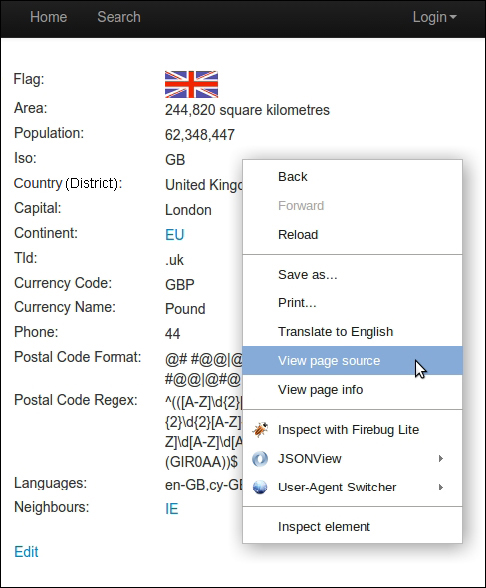
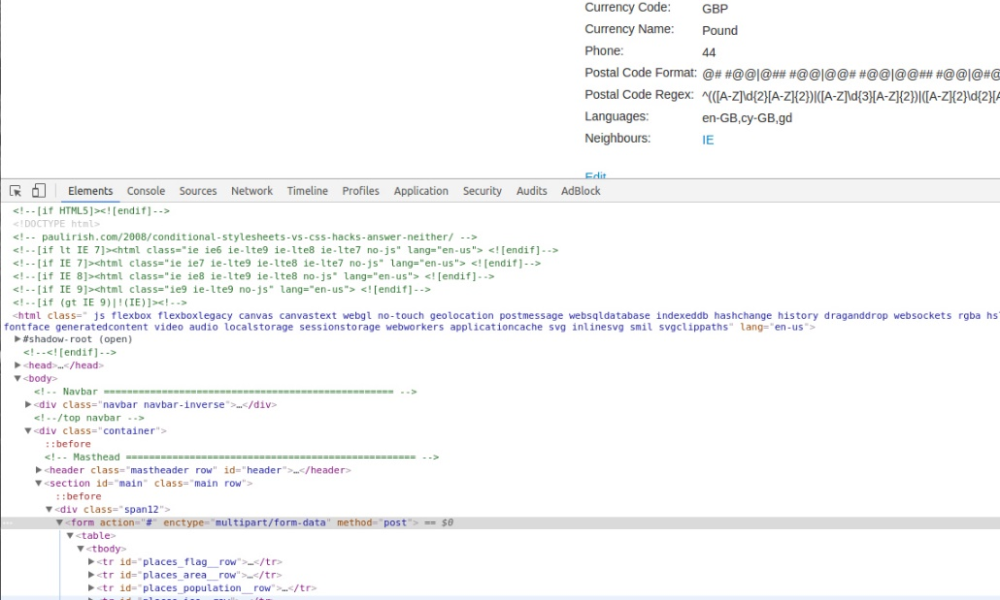
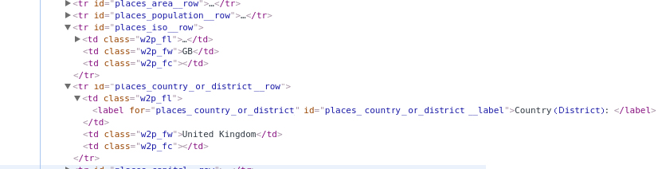
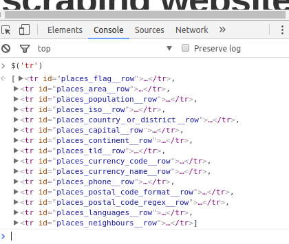
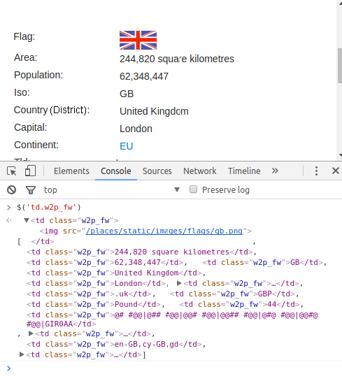
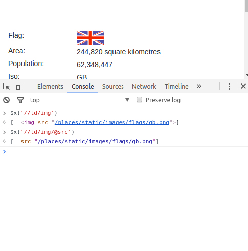
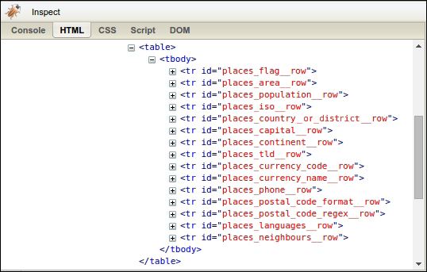
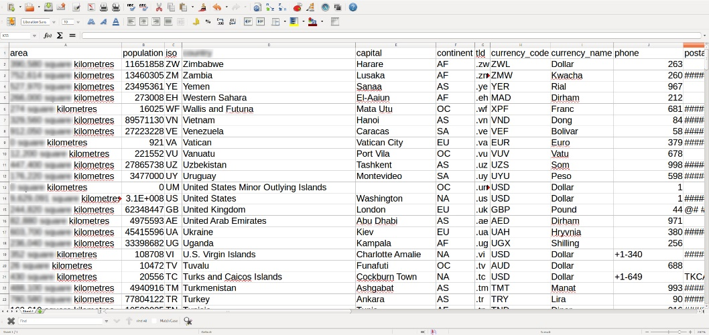

由于每章中都可能构建或使用前面章节的内容，因此我建议你按照类似本书代码库的文件结构进行配置。所有代码都可以从代码库的code目录中运行，以便导入工作正常。如果你希望创建一个不同的结构，请注意需要变更所有来自其他章的导入操作（比如下述代码中的from chp1.advanced_link_crawler）。
在上一章中，我们构建了一个爬虫，可以通过跟踪链接的方式下载所需的网页。虽然这个例子很有意思，却不够实用，因为爬虫在下载网页之后又将结果丢弃掉了。现在，我们需要让这个爬虫从每个网页中抽取一些数据，然后实现某些事情，这种做法也称为抓取（scraping）。
首先，我们会介绍一些浏览器工具，用于查看网页内容，如果你有一些Web开发背景的话，可能已经对这些工具十分熟悉了。然后，我们会介绍3种抽取网页数据的方法，分别是正则表达式、Beautiful Soup和lxml。最后，我们将对比这3种数据抓取方法。
在本章中，我们将介绍如下主题：
想要理解一个网页的结构如何，可以使用查看源代码的方法。在大多数浏览器中，都可以在页面上右键单击选择View page source选项，获取网页的源代码，如图2.1所示。

图2.1
对于我们的示例网站来说，我们感兴趣的数据是在国家（或地区）页面中。让我们来查看一下页面源代码（通过浏览器菜单或右键单击浏览器菜单）。在英国的示例页面（http://example.python-scraping.com/view/United- Kingdom-239）的源代码中，你可以找到一个包含国家（或地区）数据的表格（可以在页面源代码中通过搜索来找到它）。
<table>
<tr id="places_flag__row"><td class="w2p_fl"><label
for="places_flag" id="places_flag__label">
Flag:</label></td>
<td class="w2p_fw"><img src="/places/static/images/flags/gb.png" /></td><td
class="w2p_fc"></td></tr>
...
<tr id="places_neighbours__row"><td class="w2p_fl"><label
for="places_neighbours" id="places_neighbours__label">Neighbours:
</label></td><td class="w2p_fw"><div><a href="/iso/IE">IE
</a></div></td><td class="w2p_fc"></td></tr></table>对于浏览器解析而言，缺失空白符和格式并无大碍，但在我们阅读时却会造成一定困难。想要更好地理解该表格，我们可以使用浏览器工具。要想找到你正在使用的浏览器中的开发者工具，通常情况下只需右键单击并选择类似Developer Tools的选项。根据你所使用的浏览器不同，可能会有不同的开发者工具选项，不过几乎每个浏览器都有一个名为Elements或HTML的选项卡。在Chrome和Firefox中，只需右键单击页面上的某个元素（你在抓取时感兴趣的元素），然后选择Inspect Element。而在IE中，则需要通过按下F12键打开Developer工具栏，然后通过按下Ctrl + B选择项目。如果你使用的是没有内置开发者工具的其他浏览器，可能需要尝试安装Firebug Lite扩展，该扩展对于大多数浏览器均可以使用，读者可自行搜索并下载安装该扩展。
当我在Chrome中右键单击页面中的表格，并点击Inspect Elements时，可以看到下面打开了一个面板，其中包含了选定元素的HTML层次结构，如图2.2所示。
在图2.2中，我们可以看到table元素位于一个form元素中。我们还可以看到国家（或地区）属性包含在带有不同CSS ID的tr（即表格的行）元素中（显示为id="places_flag__row"）。由于浏览器的不同，颜色或样式可能会有所区别，不过你应该都可以点击元素，通过层次结构定位到页面中看到数据。
当我通过点击tr元素旁边的箭头，进一步展开时，可以注意到每一行都包含一个类名为w2p_fw的<td>元素，这些元素都是<tr>元素的子元素，如图2.3所示。

图2.2

图2.3
现在我们已经通过浏览器工具研究了页面，知道国家（或地区）数据表格的HTML层次结构，并且已经获得了从页面中抓取这些数据的必要信息。
现在我们已经了解了该网页的结构，下面将会介绍3种抓取其中数据的方法。首先是正则表达式，然后是流行的BeautifulSoup模块，最后是强大的lxml模块。
如果你对正则表达式还不熟悉，或是需要一些提示，那么你可以查阅https://docs.python.org/2/howto/regex.html获得完整介绍。即使你使用过其他编程语言的正则表达式，我依然推荐你一步一步温习一下Python中正则表达式的写法。
由于每章中都可能构建或使用前面章节的内容，因此我建议你按照类似本书代码库的文件结构进行配置。所有代码都可以从代码库的
code目录中运行，以便导入工作正常。如果你希望创建一个不同的结构，请注意需要变更所有来自其他章的导入操作（比如下述代码中的from chp1.advanced_link_crawler）。
当我们使用正则表达式抓取国家（或地区）面积数据时，首先需要尝试匹配<td>元素中的内容，如下所示。
>>> import re
>>> from chp1.advanced_link_crawler import download
>>> url = 'http://example.python-scraping.com/view/UnitedKingdom-239'
>>> html = download(url)
>>> re.findall(r'<td class="w2p_fw">(.*?)</td>', html)
['<img src="/places/static/images/flags/gb.png" />',
'244,820 square kilometres',
'62,348,447',
'GB',
'United Kingdom',
'London',
'<a href="/continent/EU">EU</a>',
'.uk',
'GBP',
'Pound',
'44',
'@# #@@|@## #@@|@@# #@@|@@## #@@|@#@ #@@|@@#@ #@@|GIR0AA',
'^(([A-Z]d{2}[A-Z]{2})|([A-Z]d{3}[A-Z]{2})|([A-Z]{2}d{2} [A-Z]{
2})|([A-Z]{2}d{3}[A-Z]{2})|([A-Z]d[A-Z]d[A-Z]{2}) |([A-Z]{2}d[A-Z]
d[A-Z]{2})|(GIR0AA))$',
'en-GB,cy-GB,gd',
'<div><a href="/iso/IE">IE </a></div>']从上述结果中可以看出，多个国家（或地区）属性都使用了<td class="w2p_fw">标签。如果我们只想抓取国家（或地区）面积，可以只选择第二个匹配的元素，如下所示。
>>> re.findall('<td class="w2p_fw">(.*?)</td>', html)[1]
'244,820 square kilometres'虽然现在可以使用这个方案，但是如果网页发生变化，该方案很可能就会失效。比如表格发生了变化，去除了第二个匹配元素中的面积数据。如果我们只在当下抓取数据，就可以忽略这种未来可能发生的变化。但是，如果我们希望在未来某一时刻能够再次抓取该数据，就需要给出更加健壮的解决方案，从而尽可能避免这种布局变化所带来的影响。想要该正则表达式更加明确，我们可以将其父元素<tr>也加入进来，由于该元素具有ID属性，所以应该是唯一的。
>>> re.findall('<tr id="places_area__row"><td class="w2p_fl"><label
for="places_area" id="places_area__label">Area: </label></td><td
class="w2p_fw">(.*?)</td>', html)
['244,820 square kilometres']这个迭代版本看起来更好一些，但是网页更新还有很多其他方式，同样可以让该正则表达式无法满足。比如，将双引号变为单引号，<td>标签之间添加多余的空格，或是变更area_label等。下面是尝试支持这些可能性的改进版本。
>>> re.findall('''<tr
id="places_area__row">.*?<tds*class=["']w2p_fw["']>(.*?)</td>''', html)
['244,820 square kilometres']虽然该正则表达式更容易适应未来变化，但又存在难以构造、可读性差的问题。此外，还有很多其他微小的布局变化也会使该正则表达式无法满足，比如在<td>标签里添加title属性，或者tr、td元素修改了它们的CSS类或ID。
从本例中可以看出，正则表达式为我们提供了抓取数据的快捷方式，但是该方法过于脆弱，容易在网页更新后出现问题。幸好，还有更好的数据抽取解决方案，比如我们将在本章介绍的其他抓取库。
Beautiful Soup是一个非常流行的Python库，它可以解析网页，并提供了定位内容的便捷接口。如果你还没有安装该模块，可以使用下面的命令安装其最新版本。
pip install beautifulsoup4使用Beautiful Soup的第一步是将已下载的HTML内容解析为soup文档。由于许多网页都不具备良好的HTML格式，因此Beautiful Soup需要对其标签开合状态进行修正。例如，在下面这个简单网页的列表中，存在属性值两侧引号缺失和标签未闭合的问题。
<ul class=country_or_district>
<li>Area
<li>Population
</ul>如果Population列表项被解析为Area列表项的子元素，而不是并列的两个列表项的话，我们在抓取时就会得到错误的结果。下面让我们看一下Beautiful Soup是如何处理的。
>>> from bs4 import BeautifulSoup
>>> from pprint import pprint
>>> broken_html = '<ul class=country_or_district><li>Area<li>Population</ul>'
>>> # parse the HTML
>>> soup = BeautifulSoup(broken_html, 'html.parser')
>>> fixed_html = soup.prettify()
>>> pprint(fixed_html)
<ul class="country_or_district">
<li>
Area
<li>
Population
</li>
</li>
</ul>我们可以看到，使用默认的html.parser并没有得到正确解析的HTML。从前面的代码片段可以看出，由于它使用了嵌套的li元素，因此可能会导致定位困难。幸运的是，我们还有其他解析器可以选择。我们可以安装LXML（2.2.3节中将会详细介绍），或使用html5lib。要想安装html5lib，只需使用pip。
pip install html5lib现在，我们可以重复这段代码，只对解析器做如下变更。
>>> soup = BeautifulSoup(broken_html, 'html5lib')
>>> fixed_html = soup.prettify()
>>> pprint(fixed_html)
<html>
<head>
</head>
<body>
<ul class="country_or_district">
<li>
Area
</li>
<li>
Population
</li>
</ul>
</body>
</html>此时，使用了html5lib的BeautifulSoup已经能够正确解析缺失的属性引号以及闭合标签，并且还添加了<html>和<body>标签，使其成为完整的HTML文档。当你使用lxml时，也可以看到类似的结果。
现在，我们可以使用find()和find_all()方法来定位我们需要的元素了。
>>> ul = soup.find('ul', attrs={'class':'country_or_district'})
>>> ul.find('li') # returns just the first match
<li>Area</li>
>>> ul.find_all('li') # returns all matches
[<li>Area</li>, <li>Population</li>]

想要了解可用方法和参数的完整列表，请访问Beautiful Soup的官方文档。
下面是使用该方法抽取示例网站中国家（或地区）面积数据的完整代码。
>>> from bs4 import BeautifulSoup
>>> url = 'http://example.python-scraping.com/places/view/United-Kingdom-239'
>>> html = download(url)
>>> soup = BeautifulSoup(html)
>>> # locate the area row
>>> tr = soup.find(attrs={'id':'places_area__row'})
>>> td = tr.find(attrs={'class':'w2p_fw'}) # locate the data element
>>> area = td.text # extract the text from the data element
>>> print(area)
244,820 square kilometres这段代码虽然比正则表达式的代码更加复杂，但又更容易构造和理解。而且，像多余的空格和标签属性这种布局上的小变化，我们也无须再担心了。我们还知道即使页面中包含了不完整的HTML，Beautiful Soup也能帮助我们整理该页面，从而让我们可以从非常不完整的网站代码中抽取数据。
Lxml是基于libxml2这一XML解析库构建的Python库，它使用C语言编写，解析速度比Beautiful Soup更快，不过安装过程也更为复杂，尤其是在Windows中。最新的安装说明可以参考http://lxml.de/installation.html。如果你在自行安装该库时遇到困难，也可以使用Anaconda来实现。
你可能对Anaconda不太熟悉，它是由Continuum Analytics公司员工创建的主要专注于开源数据科学包的包和环境管理器。你可以按照其安装说明下载及安装Anaconda。需要注意的是，使用Anaconda的快速安装会将你的PYTHON_PATH设置为Conda的Python安装位置。
和Beautiful Soup一样，使用lxml模块的第一步也是将有可能不合法的HTML解析为统一格式。下面是使用该模块解析同一个不完整HTML的例子。
>>> from lxml.html import fromstring, tostring
>>> broken_html = '<ul class=country_or_district><li>Area<li>Population</ul>'
>>> tree = fromstring(broken_html) # parse the HTML
>>> fixed_html = tostring(tree, pretty_print=True)
>>> print(fixed_html)
<ul class="country_or_district">
<li>Area</li>
<li>Population</li>
</ul>同样地，lxml也可以正确解析属性两侧缺失的引号，并闭合标签，不过该模块没有额外添加<html>和<body>标签。这些都不是标准XML的要求，因此对于lxml来说，插入它们并不是必要的。
解析完输入内容之后，进入选择元素的步骤，此时lxml有几种不同的方法，比如XPath选择器和类似Beautiful Soup的find()方法。不过，在本例中，我们将会使用CSS选择器，因为它更加简洁，并且能够在第5章解析动态内容时得以复用。一些读者可能由于他们在jQuery选择器方面的经验或是前端Web应用开发中的使用对它们已经有所熟悉。在本章的后续部分，我们将对比这些选择器与XPath的性能。要想使用CSS选择器，你可能需要先安装cssselect库，如下所示。
pip install cssselect现在，我们可以使用lxml的CSS选择器，抽取示例页面中的面积数据了。
>>> tree = fromstring(html)
>>> td = tree.cssselect('tr#places_area__row > td.w2p_fw')[0]
>>> area = td.text_content()
>>> print(area)
244,820 square kilometres通过对代码树使用cssselect方法，我们可以利用CSS语法来选择表格中ID为places_area__row的行元素，然后是类为w2p_fw的子表格数据标签。由于cssselect返回的是一个列表，我们需要获取其中的第一个结果，并调用text_content方法，以迭代所有子元素并返回每个元素的相关文本。在本例中，尽管我们只有一个元素，但是该功能对于更加复杂的抽取示例来说非常有用。
类似我们在使用cssselect时使用的标记，CSS选择器可以表示选择元素时所使用的模式。下面是一些你需要知道的常用选择器示例。
Select any tag: *
Select by tag <a>: a
Select by class of "link": .link
Select by tag <a> with class "link": a.link
Select by tag <a> with ID "home": a#home
Select by child <span> of tag <a>: a > span
Select by descendant <span> of tag <a>: a span
Select by tag <a> with attribute title of "Home": a[title=Home]cssselect库实现了大部分CSS3选择器的功能，其不支持的功能（主要是浏览器交互）可以查看https://cssselect.readthedocs.io/en/ latest/#supported-selectors。

W3C已提出CSS3规范。在Mozilla针对CSS的开发者指南中，也有一个有用且更加易读的文档。
由于我们在第一次编写时可能不会十分完美，因此有时测试CSS选择器十分有用。在编写大量无法确定能够工作的Python代码之前，在某个地方调试任何与选择器相关的问题进行测试是一个不错的主意。
当一个网站使用jQuery时，可以非常容易地在浏览器控制台中测试CSS选择器。控制台是你使用的浏览器中开发者工具的一部分，可以让你在当前页面中执行JavaScript代码（如果支持的话，还可以执行jQuery）。

如果想要更多地了解jQuery，可以学习一些免费的在线课程。
使用包含jQuery的CSS选择器时，你唯一需要知道的语法就是对象选择（如$('div.class_name');）。jQuery使用$和圆括号来选择对象。在括号中，你可以编写任何CSS选择器。对于支持jQuery的站点，在你浏览器的控制台中执行它，可以看到你所选择的对象。由于我们已经知道示例网站中使用了jQuery（无论是通过查看源代码，还是通过网络选项卡观察到的jQuery加载，或者是使用detectem模块），我们可以尝试使用CSS选择器选择所有的tr元素，如图2.4所示。

图2.4
仅仅通过使用标签名，我们就可以看到国家（或地区）数据中的每一行。我还可以使用更长的CSS选择器来选择元素。下面让我们尝试选择所有带有w2p_fw类的td元素，因为我知道这里包含了页面中展示的最主要的数据，如图2.5所示。

图2.5
你可能还会注意到，当你使用鼠标点击返回的元素时，可以展开它们，并且能够在上面的窗口中高亮显示（依赖于你所使用的浏览器）。这是一个非常有用的测试数据的方法。如果你所抓取的网站在浏览器中不支持加载jQuery或者任何其他对选择器友好的库，那么你可以仅仅使用JavaScript通过document对象实现相同的查询。querySelector方法的文档可以在Mozilla开发者网络中获取到。
即使你已经学会了在控制台中使用lxml的CSS选择器，学习XPath依然是非常有用的，因为lxml在求值之前会将所有的CSS选择器转换为XPath。让我们继续学习如何使用XPath，来吧！
有时候使用CSS选择器无法正常工作，尤其是在HTML非常不完整或存在格式不当的元素时。尽管像BeautifulSoup和lxml这样的库已经尽了最大努力来纠正解析并清理代码，然而它可能还是无法工作，在这些情况下，XPath可以帮助你基于页面中的层次结构关系构建非常明确的选择器。
XPath是一种将XML文档的层次结构描述为关系的方式。因为HTML是由XML元素组成的，因此我们也可以使用XPath从HTML文档中定位和选择元素。

如果你想了解更多XPath相关的知识，可以查阅Mozilla的开发者文档。
XPath遵循一些基本的语法规则，并且和CSS选择器有些许相似。表2.1所示为这两种方法的一些快速参考。
表2.1
|
选择器描述 |
XPath选择器 |
CSS选择器 |
|---|---|---|
|
选择所有链接 |
'//a' |
'a' |
|
选择类名为"main"的div元素 |
'//div[@class="main"]' |
'div.main' |
|
选择ID为"list"的ul元素 |
'//ul[@id="list"]' |
'ul#list' |
|
从所有段落中选择文本 |
'//p/text()' |
'p'* |
|
选择所有类名中包含'test'的div元素 |
'//div[contains(@class, 'test')]' |
'div [class*="test"]' |
|
选择所有包含链接或列表的div元素 |
'//div[a|ul] ' |
'div a, div ul' |
|
选择href属性中包含google.com的链接 |
'//a[contains(@href, "google.com")] |
'a'* |
从表2.1中可以看到，两种方式的语法有许多相似之处。不过，在表2.1中，有一些CSS选择器使用*表示，代表使用CSS选择这些元素是不可能的，我们已经提供了最佳的替代方案。在这些例子中，如果你使用的是cssselect，那么还需要在Python和/或lxml中做进一步的处理或迭代。希望这个对比已经给出了XPath的介绍，并且能够让你相信它比使用CSS更加严格、具体。
在我们学习了XPath语法的基本介绍之后，再来看下如何在我们的示例网站中使用它。
>>> tree = fromstring(html)
>>> area =
tree.xpath('//tr[@id="places_area__row"]/td[@class="w2p_fw"]/text()')[0]
>>> print(area)
244,820 square kilometres和CSS选择器类似，你同样也可以在浏览器控制台中测试XPath选择器。要想实现该目的，只需在页面中使用$x('pattern_here');选择器。相似地，你也可以只使用JavaScript的document对象，并调用其evaluate方法。

Mozilla开发者网络中有一篇非常有用的教程，介绍了在JavaScript中使用XPath的方法，其网址为
https://developer.mozilla.org/en-US/ docs/Introduction_to_using_XPath_in_JavaScript。
假如我们想要测试查找带有图片的td元素，来获取国家（或地区）页面中的旗帜数据的话，可以先在浏览器中测试XPath表达式，如图2.6所示。

图2.6
在这里可以看到，我们可以使用属性来指明想要抽取的数据（比如@src）。通过在浏览器中进行测试，我们可以凭借获取即时并且易读的结果，节省调试时间。
在本章及后续章节中，XPath和CSS选择器都会使用到，这样你就可以更加熟悉它们，并且在你提高自己的网络爬虫能力时，对它们的使用更加自信。
lxml同样也有遍历HTML页面中家族树的能力。家族树是什么？当你使用浏览器的开发者工具来查看页面中的元素时，你可以展开或缩进它们，这就是在观察HTML的家族关系。网页中的每个元素都包含父亲、兄弟和孩子。这些关系可以帮助我们更加容易地遍历页面。
例如，当我希望查找页面中同一节点深度的所有元素时，就需要查找它们的兄弟；或是我希望得到页面中某个特定元素的所有子元素时。lxml允许我们通过简单的Python代码大量使用此类关系。
作为示例，让我们来查看示例页面中table元素的所有子元素。
>>> table = tree.xpath('//table')[0]
>>> table.getchildren()
[<Element tr at 0x7f525158ec78>,
<Element tr at 0x7f52515ad638>,
<Element tr at 0x7f52515ad5e8>,
<Element tr at 0x7f52515ad688>,
<Element tr at 0x7f52515ad728>,
...]我们还可以查看表格的兄弟元素和父元素。
>>> prev_sibling = table.getprevious()
>>> print(prev_sibling)
None
>>> next_sibling = table.getnext()
>>> print(next_sibling)
<Element div at 0x7f5252fe9138>
>>> table.getparent()
<Element form at 0x7f52515ad3b8>如果你需要更加通用的方式来访问页面中的所有元素，那么结合XPath表达式遍历家族关系是一个能够让你不丢失任何内容的好方式。它可以帮助你从许多不同类型的页面中抽取内容，你可以通过识别页面中那些元素附近的内容，来识别页面中某些重要的部分。即使该元素没有可识别的CSS选择器，该方法同样也可以工作。
要想更好地对2.2节中介绍的3种抓取方法评估取舍，我们需要对其相对效率进行对比。一般情况下，爬虫会抽取网页中的多个字段。因此，为了让对比更加真实，我们将为本章中的每个爬虫都实现一个扩展版本，用于抽取国家（或地区）网页中的每个可用数据。首先，我们需要回到浏览器中，检查国家（或地区）页面其他特征的格式，如图2.7所示。

图2.7
通过使用浏览器的查看功能，我们可以看到表格中的每一行都拥有一个以places_起始且以__row结束的ID。而在这些行中包含的国家（或地区）数据，其格式都和面积示例相同。下面是使用上述信息抽取所有可用国家（或地区）数据的实现代码。
FIELDS = ('area', 'population', 'iso', 'country_or_district', 'capital', 'continent',
'tld', 'currency_code', 'currency_name', 'phone', 'postal_code_format',
'postal_code_regex', 'languages', 'neighbours')
import re
def re_scraper(html):
results = {}
for field in FIELDS:
results[field] = re.search('<tr id="places_%s__row">.*?<td
class="w2p_fw">(.*?)</td>' % field, html).groups()[0]
return results
from bs4 import BeautifulSoup
def bs_scraper(html):
soup = BeautifulSoup(html, 'html.parser')
results = {}
for field in FIELDS:
results[field] = soup.find('table').find('tr',id='places_%s__row' %
field).find('td', class_='w2p_fw').text
return results
from lxml.html import fromstring
def lxml_scraper(html):
tree = fromstring(html)
results = {}
for field in FIELDS:
results[field] = tree.cssselect('table > tr#places_%s__row >
td.w2p_fw' % field)[0].text_content()
return results
def lxml_xpath_scraper(html):
tree = fromstring(html)
results = {}
for field in FIELDS:
results[field] =
tree.xpath('//tr[@id="places_%s__row"]/td[@class="w2p_fw"]' %
field)[0].text_content()
return results现在，我们已经完成所有爬虫代码的实现，接下来将通过如下代码片段，测试这3种方法的相对性能。代码中的导入操作期望你的目录结构与本书代码库相同，因此请根据需要进行调整。
import time
import re
from chp2.all_scrapers import re_scraper, bs_scraper,
lxml_scraper, lxml_xpath_scraper
from chp1.advanced_link_crawler import download
NUM_ITERATIONS = 1000 # number of times to test each scraper
html =
download('http://example.python-scraping.com/places/view/United-Kingdom-239')
scrapers = [
('Regular expressions', re_scraper),
('BeautifulSoup', bs_scraper),
('Lxml', lxml_scraper),
('Xpath', lxml_xpath_scraper)]
for name, scraper in scrapers:
# record start time of scrape
start = time.time()
for i in range(NUM_ITERATIONS):
if scraper == re_scraper:
re.purge()
result = scraper(html)
# check scraped result is as expected
assert result['area'] == '244,820 square kilometres'
# record end time of scrape and output the total
end = time.time()
print('%s: %.2f seconds' % (name, end - start))在这段代码中，每个爬虫都会执行1000次，每次执行都会检查抓取结果是否正确，然后打印总用时。这里使用的download函数依然是上一章中定义的那个函数。请注意，我们在代码行中调用了re.purge()方法。默认情况下，正则表达式模块会缓存搜索结果，为了使其与其他爬虫的对比更加公平，我们需要使用该方法清除缓存。
下面是在我的计算机中运行该脚本的结果。
$ python chp2/test_scrapers.py
Regular expressions: 1.80 seconds
BeautifulSoup: 14.05 seconds
Lxml: 3.08 seconds
Xpath: 1.07 seconds由于硬件条件的区别，不同计算机的执行结果也会存在一定差异。不过，每种方法之间的相对差异应当是相似的。从结果中可以看出，在抓取我们的示例网页时，Beautiful Soup的速度是其他方法的1/6。实际上这一结果是符合预期的，因为lxml和正则表达式模块都是C语言编写的，而BeautifulSoup则是纯Python编写的。一个有趣的事实是，lxml表现得和正则表达式差不多好。由于lxml在搜索元素之前，必须将输入解析为内部格式，因此会产生额外的开销。而当抓取同一网页的多个特征时，这种初始化解析产生的开销就会降低，lxml也就更具竞争力。正如我们在使用XPath解析器时所看到的，lxml也可以直接使用正则表达式与之抗争。这真是一个令人惊叹的模块！

虽然我们强烈鼓励你使用
lxml进行解析，不过网络抓取的最大性能瓶颈通常是网络。我们将会讨论并行工作流的方法，从而让你能够通过并行处理多个请求工作，来提升爬虫的速度。
表2.2总结了每种抓取方法的优缺点。
表2.2
|
抓取方法 |
性能 |
使用难度 |
安装难度 |
|---|---|---|---|
|
正则表达式 |
快 |
困难 |
简单（内置模块） |
|
Beautiful Soup |
慢 |
简单 |
简单（纯Python） |
|
Lxml |
快 |
简单 |
相对困难 |
如果对你来说速度不是问题，并且更希望只使用pip安装库的话，那么使用较慢的方法（如Beautiful Soup）也不成问题。如果只需抓取少量数据，并且想要避免额外依赖的话，那么正则表达式可能更加适合。不过，通常情况下，lxml是抓取数据的最佳选择，这是因为该方法既快速又健壮，而正则表达式和Beautiful Soup或是速度不快，或是修改不易。
前面我们已经了解了如何抓取国家（或地区）数据，接下来我们需要将其集成到第1章的链接爬虫当中。要想复用这段爬虫代码抓取其他网站，我们需要添加一个callback参数处理抓取行为。callback是一个函数，在发生某个特定事件之后会调用该函数（在本例中，会在网页下载完成后调用）。这里的抓取callback函数包含url和html两个参数，并且可以返回一个待爬取的URL列表。下面是其实现代码，可以看出在Python中实现该功能非常简单。
def link_crawler(..., scrape_callback=None):
...
data = []
if scrape_callback:
data.extend(scrape_callback(url, html) or [])
...在上面的代码片段中，我们显示了新增加的抓取callback函数代码。如果想要获取该版本链接爬虫的完整代码，可以访问异步社区下载本书源码，从中找到该文件，其名为advanced_link_crawler.py。
现在，我们只需对传入的scrape_callback函数进行定制化处理，就能使用该爬虫抓取其他网站了。下面对lxml抓取示例的代码进行了修改，使其能够在callback函数中使用。
def scrape_callback(url, html):
fields = ('area', 'population', 'iso', 'country_or_district', 'capital',
'continent', 'tld', 'currency_code', 'currency_name',
'phone', 'postal_code_format', 'postal_code_regex',
'languages', 'neighbours')
if re.search('/view/', url):
tree = fromstring(html)
all_rows = [
tree.xpath('//tr[@id="places_%s__row"]/td[@class="w2p_fw"]' %
field)[0].text_content()
for field in fields]
print(url, all_rows)上面这个callback函数会去抓取国家（或地区）数据，然后将其显示出来。我们可以通过导入这两个函数，并使用我们的正则表达式及URL调用它们，来进行测试。
>>> from chp2.advanced_link_crawler import link_crawler, scrape_callback
>>> link_crawler('http://example.python-scraping.com', '/(index|view)/',
scrape_callback=scrape_callback)你现在应该能够看到页面下载的输出显示，以及一些显示了URL和被抓取数据的行，如下所示。
Downloading: http://example.python-scraping.com/view/Botswana-30
http://example.webscraping.com/view/Botswana-30 ['600,370 square
kilometres', '2,029,307', 'BW', 'Botswana', 'Gaborone', 'AF', '.bw', 'BWP',
'Pula', '267', '', '', 'en-BW,tn-BW', 'ZW ZA NA ']通常，当抓取网站时，我们更希望复用得到的数据，而不仅仅是打印出来，因此我们将对该示例进行扩展，将结果保存到CSV电子表格当中，如下所示。
import csv
import re
from lxml.html import fromstring
class CsvCallback:
def __init__(self):
self.writer = csv.writer(open('../data/countries_or_districts.csv','w'))
self.fields = ('area', 'population', 'iso', 'country_or_district',
'capital', 'continent', 'tld', 'currency_code',
'currency_name',
'phone', 'postal_code_format', 'postal_code_regex',
'languages', 'neighbours')
self.writer.writerow(self.fields)
def __call__(self, url, html):
if re.search('/view/', url):
tree = fromstring(html)
all_rows = [
tree.xpath(
'//tr[@id="places_%s__row"]/td[@class="w2p_fw"]' %
field)[0].text_content()
for field in self.fields]
self.writer.writerow(all_rows)为了实现该callback，我们使用了回调类，而不再是回调函数，以便保持csv中writer属性的状态。csv的writer属性在构造方法中进行了实例化处理，然后在__call__方法中执行了多次写操作。请注意，__call__是一个特殊方法，在对象作为函数被调用时会调用该方法，这也是链接爬虫中cache_callback的调用方法。也就是说，scrape_callback(url, html)和调用scrape_callback.__call__(url,html)是等价的。如果想要了解更多有关Python特殊类方法的知识，可以参考https://docs. python.org/3/reference/datamodel.html#special-method-names。
下面是向链接爬虫传入回调的代码写法。
>>> from chp2.advanced_link_crawler import link_crawler
>>> from chp2.csv_callback import CsvCallback
>>> link_crawler('http://example.python-scraping.com/', '/(index|view)',
max_depth=-1, scrape_callback=CsvCallback())请注意，CsvCallback期望在与你运行代码的父目录同一层中包含一个data目录。这一要求同样可以修改，不过我们建议你遵循良好的编码实践，保持代码与数据分离——让你的代码在版本控制之下，而data目录在.gitignore文件中。下面是示例的目录结构。
wswp/
|-- code/
| |-- chp1/
| | + (code files from chp 1)
| +-- chp2/
| + (code files from chp 2)
|-- data/
| + (generated data files)
|-- README.md
+-- .gitignore现在，当我们运行这个使用了scrape_callback的爬虫时，程序就会将结果写入到一个CSV文件中，我们可以使用类似Excel或者LibreOffice的应用查看该文件。此时可能会比第一次运行时花费更多时间，因为它正在忙碌地收集信息。当爬虫退出时，你应该就可以查看包含所有数据的CSV文件了，如图2.8所示。

图2.8
成功了！我们完成了第一个可以工作的数据抓取爬虫。
在本章中，我们介绍了几种抓取网页数据的方法。正则表达式在一次性数据抓取中非常有用，此外还可以避免解析整个网页带来的开销；BeautifulSoup提供了更高层次的接口，同时还能避免过多麻烦的依赖。不过，通常情况下，lxml是我们的最佳选择，因为它速度更快，功能更加丰富，因此在接下来的例子中我们将会使用lxml模块进行数据抓取。
我们还学习了如何使用浏览器工具和控制台查看HTML页面，以及定义CSS选择器和XPath选择器来匹配和抽取已下载页面中的内容。
在下一章中，我们将会介绍缓存技术，这样就能把网页保存下来，只在爬虫第一次运行时才会下载网页。